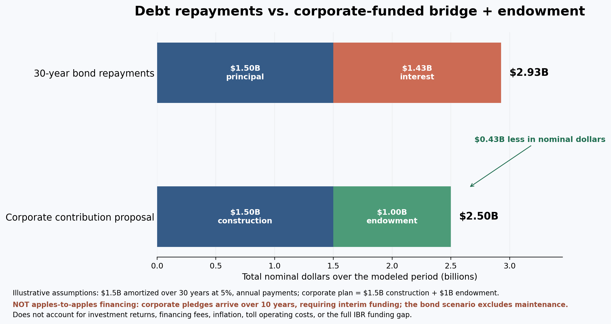
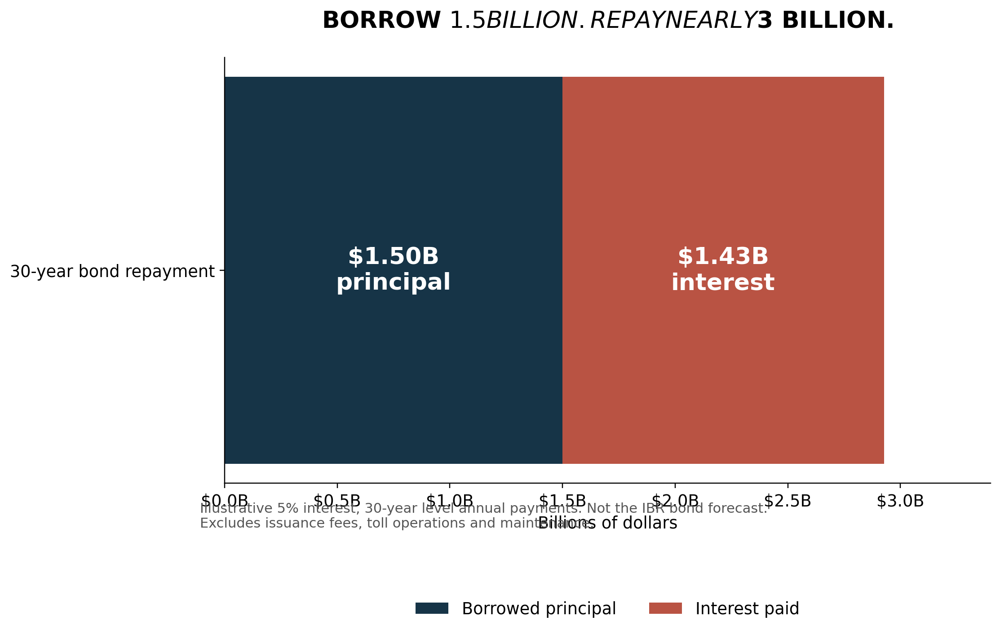
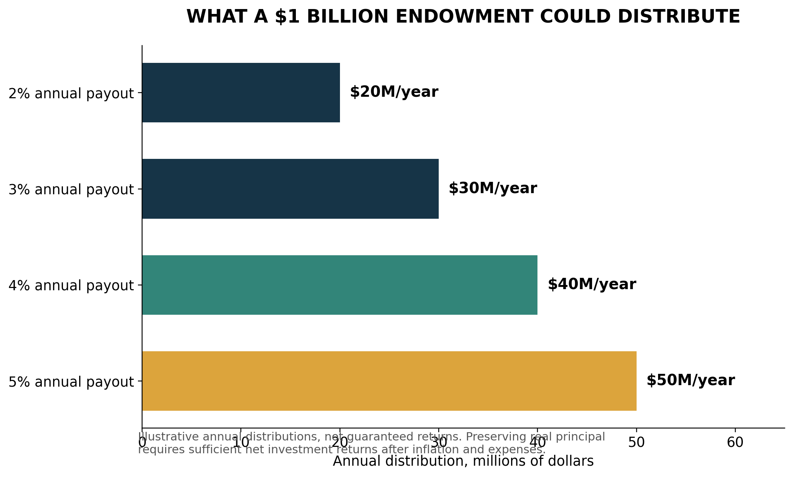

Taxes already paid
Working families contribute through state and federal taxes, fuel taxes, vehicle fees, and other public charges.
A citizen-led proposal for Oregon & Washington
We have already paid with our taxes—and with years of our lives stuck in traffic. We deserve a serious examination of a toll-free alternative.
A proposed funding model, not an adopted government financing plan.
The cost isn't just money
For more than a decade, commuters have lost countless hours on I-5—hours that could have been spent with family, friends, and community. Time is the one thing no government can give back.
Working families contribute through state and federal taxes, fuel taxes, vehicle fees, and other public charges.
Every hour spent waiting to cross the river is an hour that cannot be reclaimed.
Tolls could raise costs for workers, customers, contractors, freight operators, and small businesses on both sides of the river.
A different funding conversation
Our proposal calls for an independently evaluated, progressive ten-year contribution program involving 100 major corporations benefiting from the regional economy and I-5 corridor.
At an equal average, this is $2.5 million per company per year for ten years; actual contributions would be progressive. A $1 billion endowment might distribute roughly $40 million annually at a 4% payout rate, subject to investment returns, inflation, governance, and real maintenance needs.
See the comparison
A hypothetical $1.5 billion loan amortized over 30 years at 5% costs approximately $2.93 billion in principal and interest. The proposed $2.5 billion corporate program would also establish a $1 billion endowment—but these are not yet apples-to-apples cash-flow models.



Bond example: $1.5B principal, fixed 5% annual rate, 30 annual amortizing payments. Corporate proposal: $1.5B construction funding plus $1B endowment from ten-year pledges. A credible comparison must also model timing of construction outlays, bridge financing, actual toll-backed debt, maintenance, investment volatility, inflation, collection costs, and legal feasibility. The proposed figures do not establish that all actual IBR funding gaps would be closed or tolls eliminated.
The case for a better way
After decades of delays, political maneuvering, and millions of taxpayer dollars spent on consultants, we're now being told the Interstate Bridge Replacement could cost nearly twice what we were led to expect.
But there's another cost nobody seems to be accounting for: the years of our lives we've already surrendered.
For more than a decade, commuters have spent countless hours sitting in Interstate 5 traffic, just trying to get home from work. Hours that should have been spent with our children, our families, our friends, or simply enjoying the lives we work so hard to support.
Time is the most precious commodity any human being possesses. Once spent, it can never be earned back.
While consultants collected millions in public contracts and politicians built careers debating the bridge, ordinary citizens paid with something infinitely more valuable than money: irreplaceable hours of our lives.
And after all that, we're being asked to pay again?
Tolling was already being discussed before the latest cost increases. Now, we're told tolls are essential to closing a roughly $1.5 billion funding gap in the initial construction phase. But borrowing money costs money. At a hypothetical 5% interest rate over 30 years, financing $1.5 billion would cost approximately $2.9 billion in principal and interest.
At a recent bridge replacement meeting on Hayden Island, another resident and small business owner asked the project representatives how long tolling would continue. Their response, as I understood it, indicated a minimum of ten years, possibly thirty, and potentially indefinitely.
A toll isn't just another expense. It could become another permanent bill for simply living and working in our communities.
For forty years, I've watched America's once-thriving middle class lose ground while an ever-greater share of our nation's wealth concentrates at the top. Two incomes often struggle to cover the basics, much less build savings. Housing, groceries, fuel, utilities, healthcare, tuition, and insurance consume more of what working families earn.
We've already paid our share. Working Americans have contributed to our roads, bridges, and transportation infrastructure for generations through federal and state taxes, fuel taxes, vehicle registration fees, and countless other public charges.
Meanwhile, wealthy individuals and major corporations have access to tax advantages, deductions, and sophisticated financial structures unavailable to ordinary wage earners. Some extremely wealthy individuals and profitable corporations face comparatively low effective tax rates.
We should be removing barriers to local commerce, not creating them. From downtown Vancouver to Delta Park, businesses depend on customers, workers, suppliers, and services moving freely between our communities.
So I stood up and asked the bridge project representatives another question: Has anyone approached the major corporations that benefit from the billions of dollars in commerce moving through the I-5 corridor and asked them to help cover the funding gap?
The three representatives exchanged looks before responding. Their answer, as I understood it, was no. There was no mechanism in place to do that. Instead, they defended tolling as the standard approach used to finance infrastructure across the country.
But since when has “everybody does it” been a compelling argument against finding a better way?
They also explained that commercial trucks would pay higher tolls. That doesn't mean the burden falls primarily on wealthy corporations. Local freight operators, independent truckers, contractors, and small businesses would pay, too.
We can do better. Identify 100 major corporations benefiting from the Oregon-Washington I-5 corridor and develop a progressive, ten-year contribution program. The target: $1.5 billion toward construction and another $1 billion for a permanent bridge maintenance endowment.
Consider the scale of the request. Amazon reported $716.9 billion in 2025 revenue. At that average rate, the proposed $2.5 million annual contribution is equivalent to less than two minutes of revenue—not profit, but a useful measure of scale.
Public reporting has also described multimillion-dollar corporate contributions toward the White House ballroom project. If major companies can support high-profile private or political projects, it is fair to ask them to consider investing in essential public infrastructure, too. Individual donor amounts should be verified against original reporting before publication.
Instead of leaving our children decades of toll payments and interest obligations, we could leave them a bridge supported by a lasting public financial asset.
The proposal requires independent financial analysis, a workable mechanism for obtaining corporate commitments, and a plan that provides construction money when it's actually needed. Those are reasons to investigate the idea seriously, not dismiss it.
This isn't about punishing success. It's about recognizing that the infrastructure supporting enormous private wealth is a shared responsibility.
We've already paid in money. We've already paid in time. And now they want to charge us admission to the solution?
Build the bridge. Protect local commerce. Ask those who benefit most to contribute more. And for once, leave the next generation an asset instead of another bill.
Add your voice
Ask Oregon and Washington leaders to seriously evaluate toll-free financing, protect local commerce, and publish a transparent comparison of the alternatives.
Our campaign goal: 500,000 signatures. This is a target, not a current signature count.
Already signed? Help us reach more neighbors by sharing the petition.
Share by email